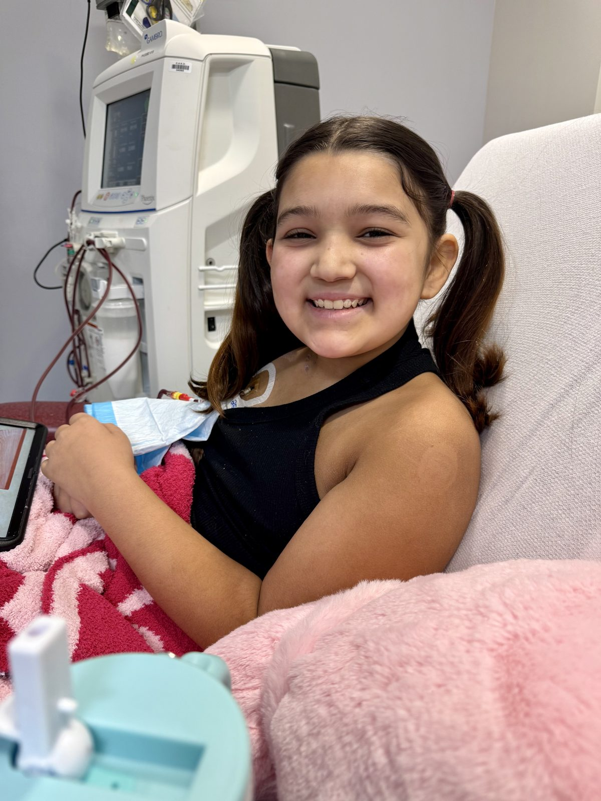
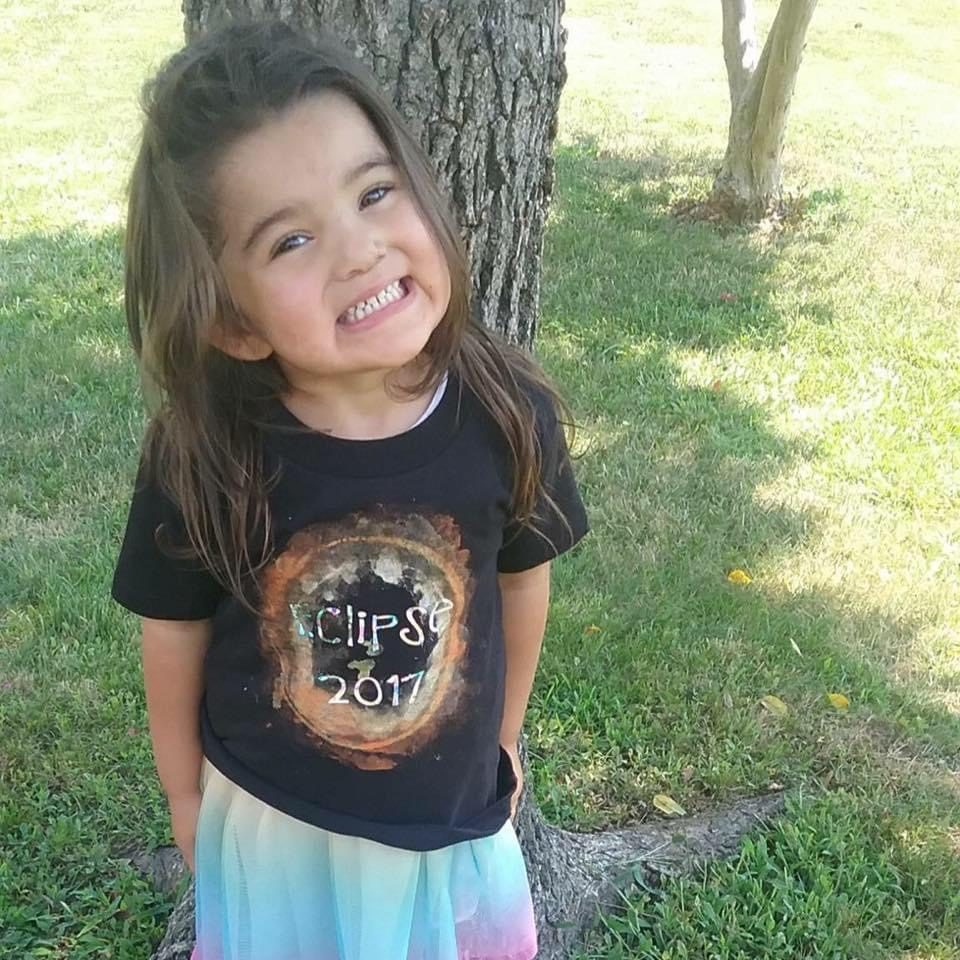
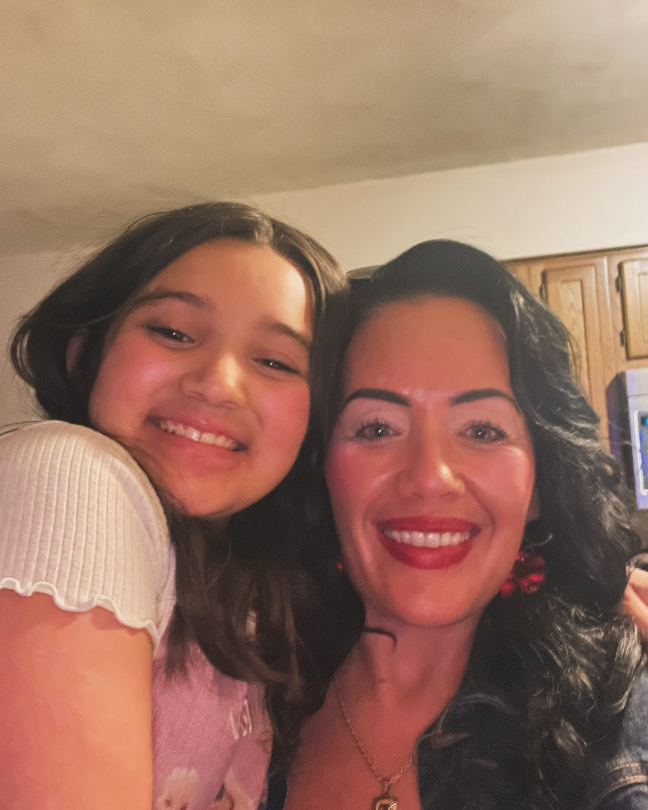
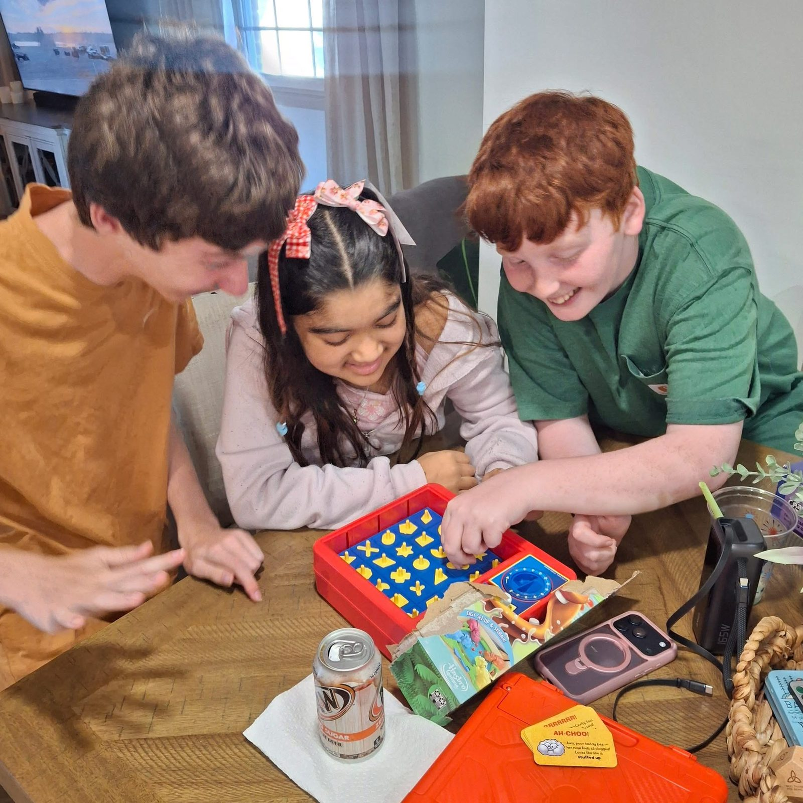
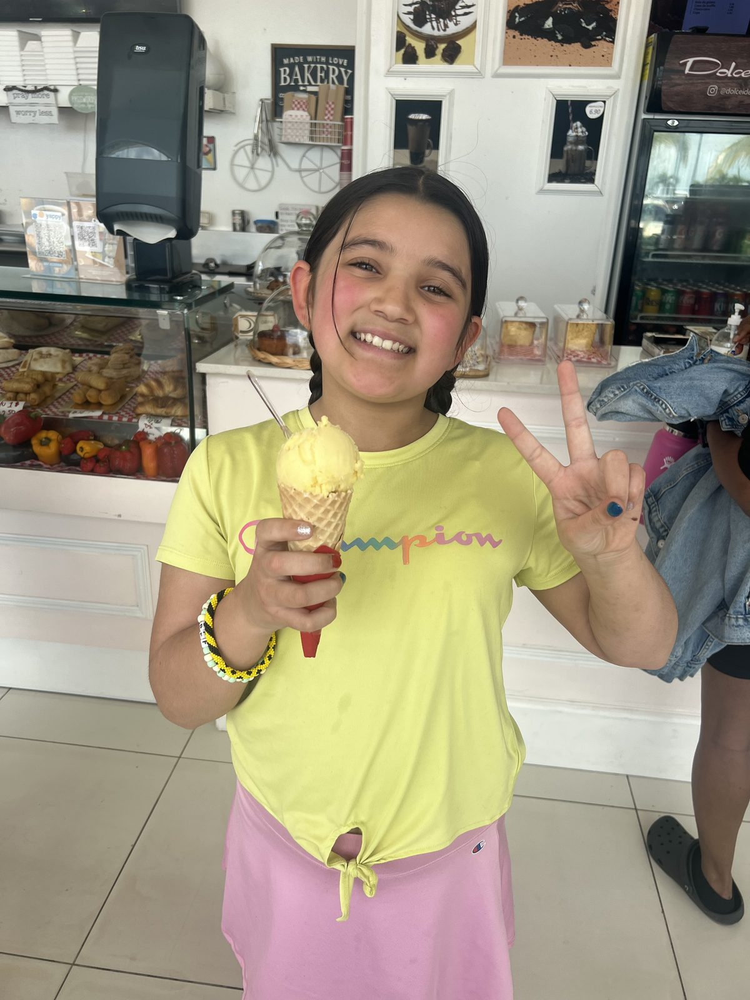
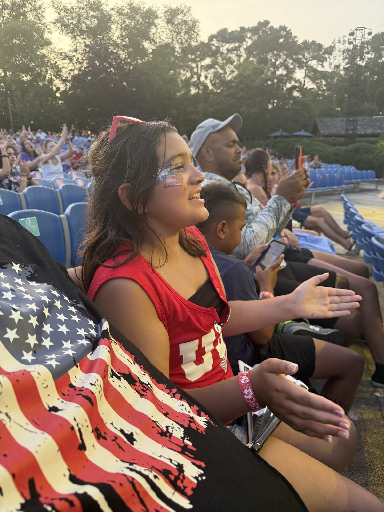

Sofia is a brave 12-year-old girl in need of a living kidney donor. Every share, every conversation, and every act of kindness brings her one step closer to hope.
Not type O? You can still help. Through paired exchange, your kidney goes to a matching stranger and Sofia receives a matching kidney in return.

A local news channel shared Sofia's story watch and share to help us reach more people.
A living donor can help Sofia by giving her a healthy kidney and a second chance at life.
Sofia can accept O positive or O negative. Every other blood type can still help her through a paired exchange.
A transplant would give Sofia more energy, freedom, and the chance to do what she loves.
With a new kidney, Sofia can continue making beautiful memories with her loved ones.
Most donation-related medical expenses are typically covered.
Travel and lodging support may be available for eligible donors.
Donors receive guidance and support throughout the entire process.
Many donors continue to live healthy and active lives with one kidney.
Yes. Most donors continue living healthy and normal lives.
Most donation-related medical expenses are covered.
Begin by completing the donor screening form.
The prescreening form takes about 10 minutes, it is confidential, and it costs you nothing. Sofia's family never sees your medical answers.
1. Open the Sentara living donor prescreening form:
Open the Sentara Prescreening Form → sentara.donorscreen.org — opens in a new tab
2. Complete the confidential health questionnaire.
3. Enter Sofia as the person you wish to donate to:
Questions first? Email kidney4sofia@gmail.com — we answer every message. You can stop at any point, and there is no obligation.
Download the printable flyer (PDF) — please post it at work, church, your gym or anywhere people gather.
Your kindness could change Sofia's future.
Begin Prescreening




Sofia's donor is most likely someone none of us has met yet. Sharing is how we reach them.